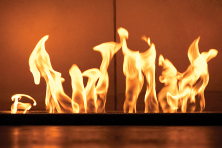

© 2008 Jupiterimages Corporation
Unit A studies the energy changes that occur in chemical reactions. In this unit you will learn how to measure the magnitude of such energy changes. You will also explore scientific theories that are used to predict and explain the energy changes involved in a chemical change, which are based on empirical measurements similar to the type you will make.
Module 1 examines how energy changes in chemical reactions are determined and interpreted. In Science 10 you used calorimetry to investigate energy changes of physical changes. In this module you will use calorimetry to measure enthalpy changes. You will use standard molar enthalpies of formation to predict the magnitude of energy changes associated with chemical reactions.
Module 2 investigates the events and energy changes associated with chemical reactions from the molecular level. You will learn about activation energy and the role that catalysts have to play in chemical processes. You will understand the function of catalysts from the perspective of chemical energetics.
Because energy is a unifying theme throughout this course and in science, these two modules will be an important foundation for your study throughout this course. For example, in Unit B you will investigate electrochemical changes and further study energy conversions when matter undergoes change. Unit C involves an investigation of hydrocarbons, a common source of energy in society, and petrochemicals. Finally, Unit D involves a study of chemical equilibrium. As you will find, energy transfers between a chemical system and its surroundings can influence an equilibrium. The influence of energy in a chemical system is best exemplified by the many chemical processes that require energy in the form of heat or light in order to occur.
For clear viewing of equations in Microsoft(R) Office Word documents, Euclid fonts are required. You can download them from http://www.dessci.com/en/dl/fonts/getfont.asp if you do not already have them.
At the end of Unit A you will be able to
You will showcase what you have learned in the Unit A Assessment.